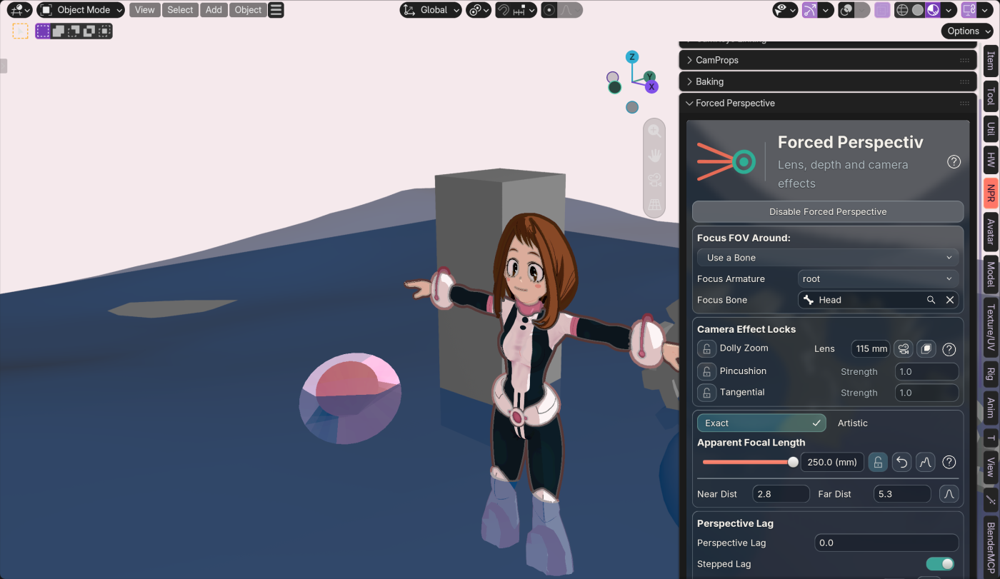
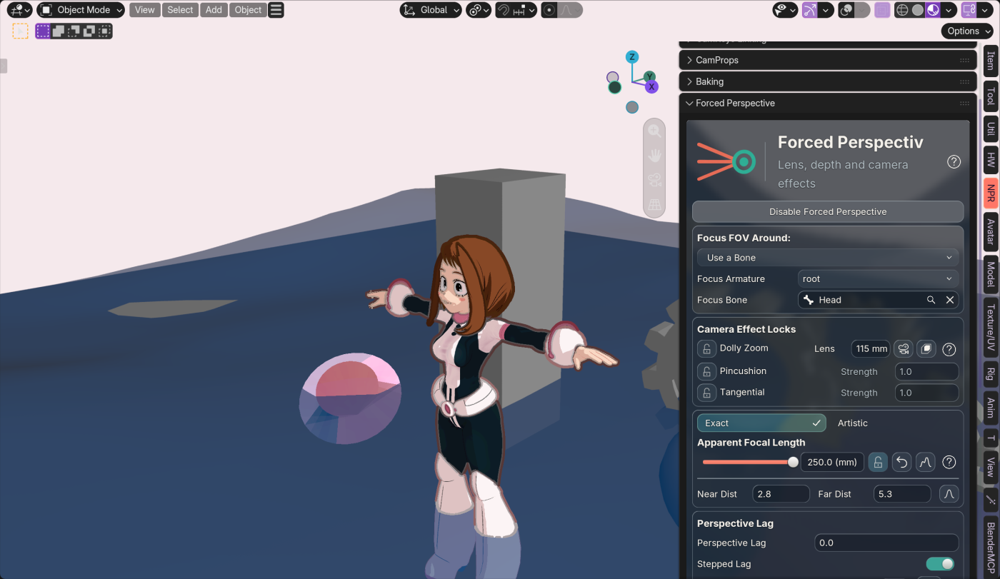

Before · affine scale


Schema18 · installed in Uraraka · Exact default · release3.5.6 unchanged
The uniform volume scale was a shape regression. The repaired long-lens mapping shrinks nearer cross-sections and enlarges farther ones, with one shared focus normalization. At250/115mm, the captured Head's maximum displacement drops from54.35cm to0.38cm; hair displacement drops from roughly54cm to0.54–0.61cm.


Actual live Metal captures at the same observer view; source camera remains115mm, apparent lens250mm. The capture is not a full reproduction of every reported close-up angle. Original6.69mm setting and unsaved scene state restored after capture.
Final 40,962-vertex Exact fixture: short2.14–2.23ms; corrected long3.60–4.02ms. The matched affine baseline is2.07–2.25ms. This measures input update + depsgraph + readback, not viewport FPS.
Stock Mac4.2–5.2 release-family runtime checks passed. Closed full-influence test volumes are conserved and camera rays retained. Open/cancelling Head selections use a stable unsigned measure; this is not a solid-volume or curvature/raycast invariant. Differing falloffs can still introduce intersections. Short-lens Exact retains the previous affine map and intentional camera-plane clipping.
Measured diagnostics and limits · Single image comparison · Overview